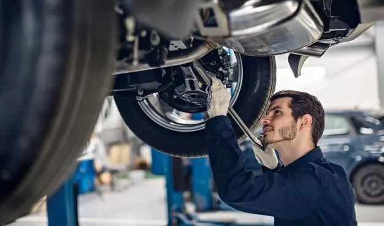
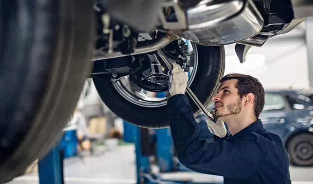

Juan Alfaro
ESPECIALISTA EN ELECTRÓNICA AUTOMOTRIZ
Su función se basa en detectar fallos, servicio y mantenimiento o reparación de todos los elementos del circuito eléctrico de carga, arranque, luces y accesorios del vehículo.
Ver Trabajos
Samuel López
ESPECIALISTA EN CAJAS DE CAMBIO
Su función se basa en la reparación de cajas de cambios automáticas y mecánicas con el mas estricto apego a las normas que cada fabricante impone a su Servicio Técnico.
Ver trabajosDylan González
ESPECIALISTA EN SUSPENSIÓN Y DIRECCIÓN
Su función se basa en diagnosticar fallas y reparar los sistemas de suspensión y de dirección, con todos sus componentes.
Ver Trabajos


 
